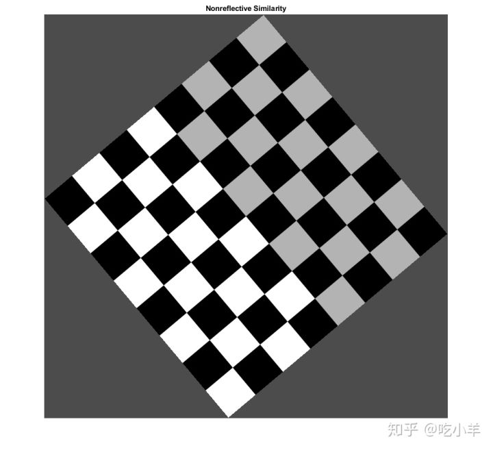

Home
本示例通过将不同的变换应用于棋盘图像来显示几何变换的许多属性。
概览
二维几何变换是将欧几里得平面中的每个点与欧几里得平面中的另一个点相关联的映射。在这些示例中，几何变换由一条规则定义，该规则告诉如何将具有笛卡尔坐标（x，y）的点映射到具有笛卡尔坐标（u，v）的另一个点。棋盘图案有助于可视化输入图像平面中的坐标网格以及每次转换所引入的失真类型。
图1：创建棋盘格
checkerboard 生成的图像具有矩形图块和四个唯一的角，这使您很容易看到棋盘格图像如何因几何变换而失真。
运行完此示例一次后，请尝试将图像I更改为您喜欢的图像。
sqsize = 60;
I = checkerboard(sqsize,4,4);
nrows = size(I,1);
ncols = size(I,2);
fill = 0.3;
imshow(I)
title('Original')
图2：将非反射相似性应用于棋盘格
非反射相似性变换可以包括旋转，缩放和平移。这些变换保留了形状和角度。平行线保持平行。直线保持直线。
对于非反射相似性，
[u v]=[x y 1]T
T 是一个3×3矩阵，取决于4个参数。
% Try varying these 4 parameters.
scale = 1.2; % scale factor
angle = 40*pi/180; % rotation angle
tx = 0; % x translation
ty = 0; % y translation
sc = scale*cos(angle);
ss = scale*sin(angle);
T = [ sc -ss 0;
ss sc 0;
tx ty 1];
由于非反射相似性是仿射变换的子集，因此可以使用以下方法创建affine2d对象：
t_nonsim = affine2d(T);
I_nonreflective_similarity = imwarp(I,t_nonsim,'FillValues',fill);
imshow(I_nonreflective_similarity);
title('Nonreflective Similarity')

如果您更改tx或ty为非零值，你会发现，它对输出图像没有影响。如果要查看与转换对应的坐标（包括平移），请包含空间参考信息：
[I_nonreflective_similarity,RI] = imwarp(I,t_nonsim,'FillValues',fill);
imshow(I_nonreflective_similarity,RI)
axis on
title('Nonreflective Similarity (Spatially Referenced)')
注意，从imwarp中传递输出空间参考对象RI揭示了平移。要指定要查看输出图像的哪一部分，请在imwarp函数中使用“ OutputView”名称/值对。
图3：将相似性应用于棋盘格
在相似性转换中，相似的三角形映射到相似的三角形。非反射相似变换是相似变换的子集。
对于相似性，该方程式与非反射相似性相同：
[u v]=[x y 1]T
T 是一个3×3矩阵，它取决于4个参数以及一个可选的反射。
% Try varying these parameters.
scale = 1.5; % scale factor
angle = 10*pi/180; % rotation angle
tx = 0; % x translation
ty = 0; % y translation
a = -1; % -1 -> reflection, 1 -> no reflection
sc = scale*cos(angle);
ss = scale*sin(angle);
T = [ sc -ss 0;
a*ss a*sc 0;
tx ty 1];
由于相似性是仿射变换的子集，因此可以使用以下方法创建affine2d对象：
t_sim = affine2d(T);
与上面的平移示例一样，从imwarp函数中检索输出的空间参考对象RI，并将RI传递到imshow以显示反射。
[I_similarity,RI] = imwarp(I,t_sim,'FillValues',fill);
imshow(I_similarity,RI)
axis on
title('Similarity')
图4：将仿射变换应用于棋盘格
在仿射变换中，x和y维度可以独立缩放或剪切，并且可以存在平移、反射和/或旋转。平行线保持平行。直线保持直线。相似性是仿射变换的子集。
对于仿射变换，等式与相似性和非反射相似性相同：
[u v]=[x y 1]T
T是3 x 3矩阵，其中第一列和第二列的所有六个元素都可以不同。第三列必须为[0; 0; 1]。
% Try varying the definition of T.
T = [1 0.3 0;
1 1 0;
0 0 1];
t_aff = affine2d(T);
I_affine = imwarp(I,t_aff,'FillValues',fill);
imshow(I_affine)
title('Affine')
图5：将投影变换应用于棋盘格
在投影变换中，四边形映射到四边形。直线保持直线，但平行线不一定保持平行。仿射变换是投影变换的子集。
对于投影变换：
[up vp wp]=[x y w]T
u=up/wp
v=vp/wp
T是一个3×3矩阵，其中所有9个元素都可以不同。
T= [A D G
B E H
C F I]
上面的矩阵方程式等效于以下两个表达式：
u=(Ax+By+C)/(Gx+Hy+I)
v=(Dx+Ey+F)/(Gx+Hy+I)
尝试更改T中九个元素中的任何一个。
T = [1 0 0.002;
1 1 0.0002;
0 0 1 ];
t_proj = projective2d(T);
I_projective = imwarp(I,t_proj,'FillValues',fill);
imshow(I_projective)
title('Projective')
图6：对棋盘格应用分段线性变换
在分段线性变换中，仿射变换分别应用于图像区域。在此示例中，棋盘的左上角，右上角和左下角点保持不变，但是图像右下角的三角形区域被拉伸，因此变换后的图像的右下角为向右50％，比原始坐标低20％。
movingPoints = [0 0; 0 nrows; ncols 0; ncols nrows;];
fixedPoints = [0 0; 0 nrows; ncols 0; ncols*1.5 nrows*1.2];
t_piecewise_linear = fitgeotrans(movingPoints,fixedPoints,'pwl');
I_piecewise_linear = imwarp(I,t_piecewise_linear,'FillValues',fill);
imshow(I_piecewise_linear)
title('Piecewise Linear')
图7：将正弦变换应用于棋盘
本示例和以下两个示例显示了如何创建显式映射，以将常规网格（xi，yi）中的每个点与另一个点（ui，vi）关联。此映射存储在一个geometricTranform2d对象中，imwarp使用该对象用于变换图像。
在此正弦变换中，每个像素的x坐标不变。每行像素的y坐标按照正弦曲线模式上移或下移。
a = ncols/12; % Try varying the amplitude of the sinusoid
ifcn = @(xy) [xy(:,1), xy(:,2) + a*sin(2*pi*xy(:,1)/nrows)];
tform = geometricTransform2d(ifcn);
I_sinusoid = imwarp(I,tform,'FillValues',fill);
imshow(I_sinusoid);
title('Sinusoid')
图8：将桶形转换应用于棋盘格
桶形失真会使图像从其中心径向向外扩散传播。离中心越远，失真越大，从而导致产生凸面。
首先，定义一个函数，将像素索引映射为到中心的距。使用meshgrid函数创建每个像素的x坐标和y坐标的数组，其原点位于图像的左上角。
[xi,yi] = meshgrid(1:ncols,1:nrows);
将原点移动到图像的中心。然后，使用函数cart2pol将笛卡尔的x和y坐标转换为圆柱角（theta）和半径（r）坐标。随着到中心像素的距离增加，r也线性变化。
xt = xi - ncols/2; yt = yi - nrows/2; [theta,r] = cart2pol(xt,yt);
定义三次项的幅度a。此参数是可调的。然后，向r中添加一个三次项，以便r随着距中心像素的距离呈现非线性变化。
a = 1; % Try varying the amplitude of the cubic term. rmax = max(r(:)); s1 = r + r.^3*(a/rmax.^2);
转换回笛卡尔坐标系。将原点移回图像的右上角。
[ut,vt] = pol2cart(theta,s1); ui = ut + ncols/2; vi = vt + nrows/2;
在对象geometricTranform2d中，存储（xi，yi）和（ui，vi）之间的映射。根据像素映射，用imwarp变换图像。
ifcn = @(c) [ui(:) vi(:)];
tform = geometricTransform2d(ifcn);
I_barrel = imwarp(I,tform,'FillValues',fill);
imshow(I_barrel)
title('Barrel')
图9：将枕形转换应用于棋盘格
枕形失真是桶形失真的逆，因为三次项的振幅为负。距中心越远，变形仍然更大，但变形显示为凹面。
你可以从与桶形变换相同的theta和r值开始。定义三次项的另一个幅度b。此参数是可调的。然后，用r减去三次项，以使r距中心像素的距离呈非线性变化。
b = 0.4; % Try varying the amplitude of the cubic term. s = r - r.^3*(b/rmax.^2);
转换回笛卡尔坐标系。将原点移回图像的右上角。
[ut,vt] = pol2cart(theta,s); ui = ut + ncols/2; vi = vt + nrows/2;
存储geometricTranform2d对象中（xi，yi）和（ui，vi）之间的映射。根据像素映射，用imwarp变换图像。
ifcn = @(c) [ui(:) vi(:)];
tform = geometricTransform2d(ifcn);
I_pin = imwarp(I,tform,'FillValues',fill);
imshow(I_pin)
title('Pin Cushion')
摘要：显示棋盘格的所有几何变换
figure
subplot(3,3,1),imshow(I),title('Original')
subplot(3,3,2),imshow(I_nonreflective_similarity),title('Nonreflective Similarity')
subplot(3,3,3),imshow(I_similarity),title('Similarity')
subplot(3,3,4),imshow(I_affine),title('Affine')
subplot(3,3,5),imshow(I_projective),title('Projective')
subplot(3,3,6),imshow(I_piecewise_linear),title('Piecewise Linear')
subplot(3,3,7),imshow(I_sinusoid),title('Sinusoid')
subplot(3,3,8),imshow(I_barrel),title('Barrel')
subplot(3,3,9),imshow(I_pin),title('Pin Cushion')
请注意，subplot会更改正在显示图像的比例。
======================================================================
我的测试结果及程序
下面是我测试的代码：

注：本文根据MATLAB官网内容修改而成。